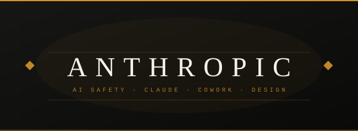

AI Workplace
Tokenmaxxing Is Here. The Real Questions Are Just Starting.

Every time you use an AI tool, it processes your request in units called tokens, roughly three-quarters of a word each. That's how usage gets measured, and how companies get charged. Most tools give you a limit per session or per month. Go over it, pay more. The bigger and more complex the task, the faster those tokens burn.
There's a movement in Silicon Valley called tokenmaxxing. Engineers are deliberately flooding their prompts with as much context as possible, entire codebases and full document libraries, to squeeze more out of each request. Token spend is showing up in performance reviews and job offers. Jensen Huang, CEO of Nvidia, floated giving engineers half their salary again in AI tokens. Business token spend is up 13x since January 2025. That raises two questions worth sitting with. First: what does a culture built around maximizing AI consumption do to the people doing the work? Does it make them better at their jobs, more creative, more collaborative, or does it just add a new layer of pressure? Second: token pricing is low right now because companies are competing for market share. When that changes, and it will, what happens to every workflow a business has built around cheap, unlimited AI access? Will teams have to decide which processes are still worth running through AI and which ones revert back to the old way? We don't have answers to those questions yet. But the time to start asking them is before the costs show up on the invoice.
Read more →
AI Tools
Anthropic Isn't Building a Better Chatbot. It's Running Your Computer.

Claude Code was built for developers. Write a prompt, Claude writes and runs the code. That was the idea. It didn't take long for developers to realize it could do more than write software: it could reorganize an entire folder structure and rename thousands of files in seconds, pull data from a local spreadsheet, clean it, and output a formatted report, and automate the repetitive browser tasks that nobody wants to do but everyone has to. Once that clicked, the next question was obvious. If Claude can do all of that on a developer's machine, why couldn't it do the same for everyone else in the office?
Claude Cowork is the answer. It runs on your desktop and connects directly to the tools you already use: your browser, Excel, PowerPoint, Google Drive, Gmail, DocuSign. It doesn't just answer questions about those tools. It operates them. You ask it to pull your last three months of invoices, flag anything over budget, and draft a summary for your accountant. It opens the files, reads the data, writes the summary, sends it. End to end. The mechanism that makes this work at a company level is called skills. Instead of building a custom AI agent from scratch, businesses deploy pre-packaged skills that already encode specific workflows. A financial analysis skill knows how to move through your spreadsheets. An HR skill knows your onboarding process. The shift from agents to skills is significant: it takes something that previously required a developer to build and turns it into something a team can install and use tomorrow.
And they aren't stopping there. Claude Design, launched last week, does for visual creation what Cowork does for knowledge work. Describe what you need and it builds the first version. A pitch deck, a one-pager, a landing page prototype. Figma's stock dropped the day it launched. Anthropic is building the layer that sits on top of how a business actually runs. That layer is getting thicker every week.
Every prompt has invisible dials. Most people leave them at default.
Tone. Specificity. Formality. Audience. Length. You're already using all of these — you just don't know it. Every prompt you write has these dials baked in, set to whatever position you happened to type. Move one of them deliberately, and the response changes. Not a little different. Move all of them and you're producing something most people don't know is possible.
Utilizing an LLM isn't always about how much context you give it — but sometimes how much and the order in which that context is received. The Prompt Studio is a hands-on tool built to practice just that. Adjust the dials, watch the prompt update in real time, copy it, try it.
Now Playing
The Prompt Studio
A session in tuning prompts.
Takes
Specific·
Warm·
Terse·
Playful·
Formal·
Irreverent·
Precise·
Measured·
Candid·
Direct·
Specific·
Warm·
Terse·
Playful·
Formal·
Irreverent·
Precise·
Measured·
Candid·
Direct·
Try it on something you're actually working on. Drop a comment on LinkedIn and tell me what you used it on.
Three worth having open this week.